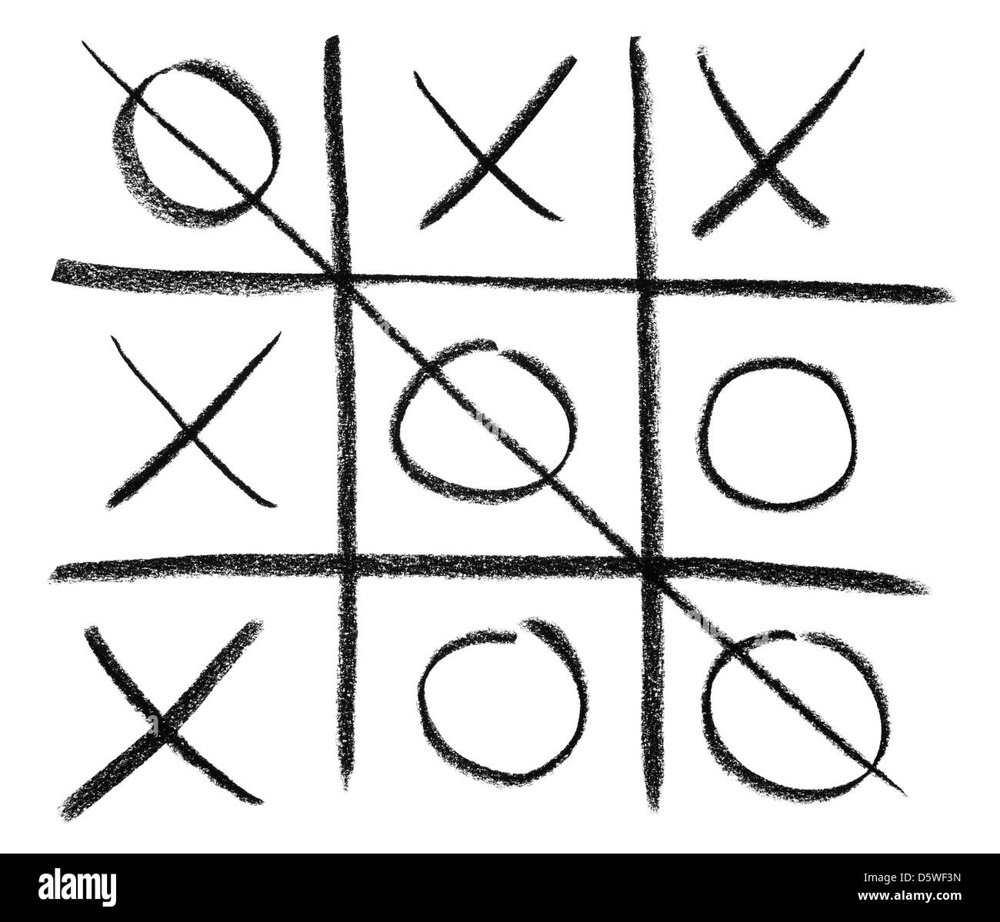
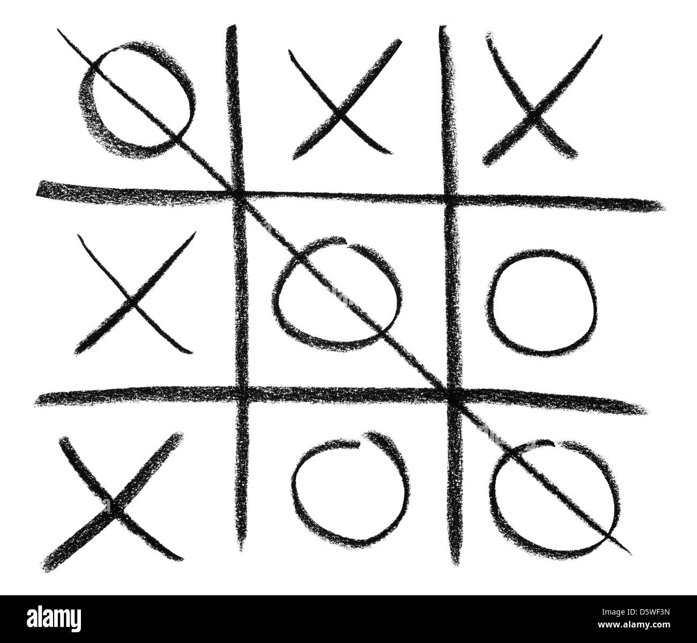

Boter Kaas & Eiren
Inhoud:Tic Tac Toe is een simpel strategie spel voor twee spelers.
Het wordt gespeeld op een 3x3 raster en elke speler plaatst om beurten een X of O op het bord.
Het doel is om een rij van drie tekens te maken of het bord vol te spelen zonder winnaar.
Genre: Paper-and-pencil game
Multiplayer: Ja
Rating: *****
Ontwikkelaar: ?
Uitgavedatum: 2100 years ago
 

Strategie
Actie
Twee-spelers
Recenties
Reviewer 1: This game is intense and keeps me on the edge of my seat. The graphics are stunning and the storyline is well thought out. Highly recommend.
Reviewer 2: The multiplayer aspect adds an extra level of excitement to the already thrilling gameplay. Can't wait to see what's next for this franchise.
Reviewer 3: A must-play for fans of the survival horror genre. The atmosphere is creepy and the sound design is top-notch. Can't wait to jump back in and play some more.
Systeemeisen
Minimum:
- OS: Windows 7/8/10
- CPU: Intel Pentium 4 2.00GHz.
- Graphics Card: ATI FireGL T2-128.
- File Size: 135 MB.
- Memory: 512 MB.